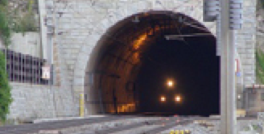

Наши работы
При выборе наилучших проектных решений реализации объектов различной категории ответственности проводится необходимый комплекс исследований – инженерные изыскания.
Грамотно разработать проектную документацию возможно только опираясь на корректные исследования.
- Все
- Инженерные изыскания
- Гидрогеология
- Аэрофотосъемка сканирование
- Мониторинг деформаций
- Геологоразведка
- Маркшейдерские работы
- Горное проектирование
- Горный аудит

Инженерные изыскания
Гидрометеорологические изыскания, Изыскания для строительства
Создание и развитие тоннельной полигонометрии IV разряда и высотной опор-ной сети III класса на объекте "Строительство второго сплошного пути на участке Сочи-Адлер Северо-Кавказской ж.д.
Инженерные изыскания
Гидрометеорологические изыскания, Изыскания для строительства
Создание и развитие тоннельной полигонометрии IV разряда и высотной опор-ной сети III класса на объекте "Строительство второго сплошного пути на участке Сочи-Адлер Северо-Кавказской ж.д.
Инженерные изыскания
Гидрометеорологические изыскания, Изыскания для строительства
Создание и развитие тоннельной полигонометрии IV разряда и высотной опор-ной сети III класса на объекте "Строительство второго сплошного пути на участке Сочи-Адлер Северо-Кавказской ж.д.
Инженерные изыскания
Гидрометеорологические изыскания, Изыскания для строительства
Создание и развитие тоннельной полигонометрии IV разряда и высотной опор-ной сети III класса на объекте "Строительство второго сплошного пути на участке Сочи-Адлер Северо-Кавказской ж.д.